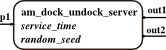

ATOMIC PDEVS am_dock_undock_server
stored in DEVS_PATH/01-modelbase/orange_juice_canning/am_dock_undock_server.m
Contents
Description
Class definition file for an atomic PDEVS model that models a server for the docking and undocking process, service time is uniformly distributed

constructor call: obj = am_dock_undock_server(name,inistates,elapsed,service_time,random_seed)
Superclass
atomic (superclass acts as associated simulator)
Class Methods
characteristic functions:
- ta = tafun(obj) : time advance function - calculates time until next internal event by evaluating the states in s
- deltaconffun(obj,gt) : confluent function - calculates from states s, inputs x and elapsed time elapsed the new states s', if there is an internal and an external event at the same time
- deltaextfun(obj,gt) : external transition function - calculates from states s, inputs x and elapsed time elapsed the new states s'
- deltaintfun(obj) : internal transition function - calculates from states s the new states s'
- lambdafun(obj) : output function calculates from states s the ouptputs y
display functions:
- showall(obj) : display the object
- showxports(obj) : display x-ports and values
- showyports(obj) : display y-ports and values
- showstates(obj) : display states in s
- showsysparams(obj): display system parameters in sysparams
Inherited Properties
inherited from atomic:
- name : string, (unique) name of this model --> for debugging purposes max. 12 characters for "nice" debug-look ;-)
- x : structure, set of inport name/input value pairs
- y : structure, set of outport name/output value pairs
- s : structure, set of states
- sysparams : structure, set of system parameters, can be set only once at instantiation
- elapsed : float, time elapsed since last transition (only for initialization)
- debug_flag: 0|1|2|3, no messages|messages|steps|visualize x, y, and s (default 0)
- observe_flag: 0|1, log states of atomic subcomponents or not (default 0)
- observed : cell array including time stamps and a copy of s (structure of states)
Ports
has one input x: p1 for incoming trucks
has two outputs y: out1 and out2, first to send jobs to next process step, other for signaling
States in s
s.sigma: for time advance
s.rand_state: random number generator settings
System Parameters in sysparams
sysparams.service_time : interval for uniform distribution of service time
sysparams.random_seed : seed for random number generator
More
global SIMUSTOP : can be used to stop allover simulation
DEVS Tbx Home Examples Modelbase << Back